Gallery
Euler simulation / Finite differnce of Gaussian blob
Euler simulation / Finite differnce of Gaussian blob


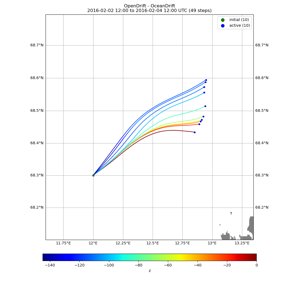
ROMS native reader

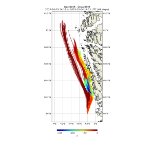
Drift at different depths


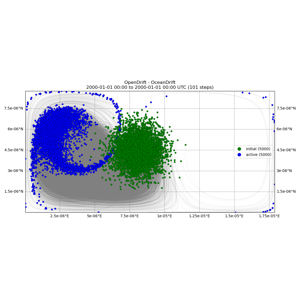
Double gyre


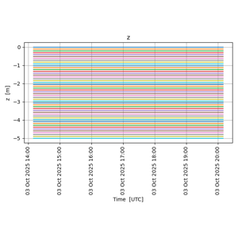
2D simulation profile


Fjord
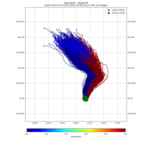
Ship drift


Plotting map


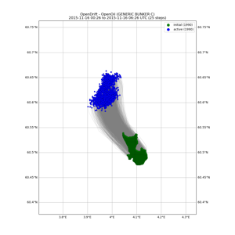
Satellite

Euler simulation / Finite difference of blob with the Norkyst nordic ocean model
Euler simulation / Finite difference of blob with the Norkyst nordic ocean model
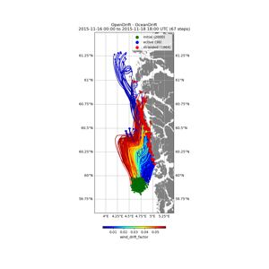
Drifter

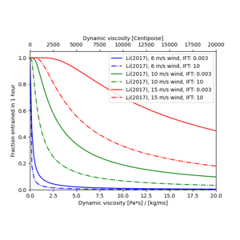
Oil entrainment rate


Comparing Leeway and ShipDrift model
Comparing Leeway and ShipDrift model


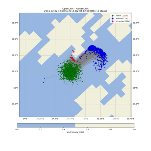
Model landmask
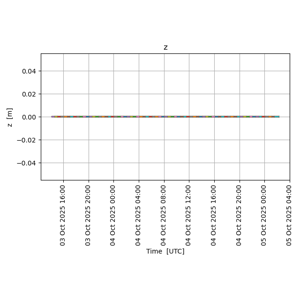
Sediment drift from Glomma river outlet
Sediment drift from Glomma river outlet
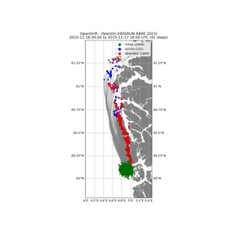
Openoil
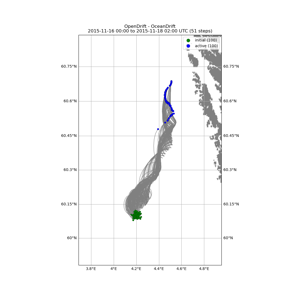
Back and forth
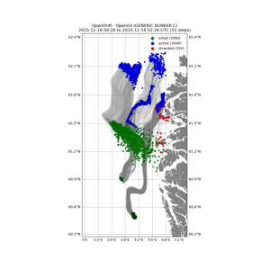
Multi seed
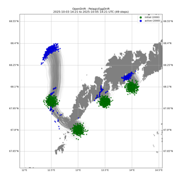
Cod egg


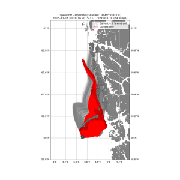
Compare


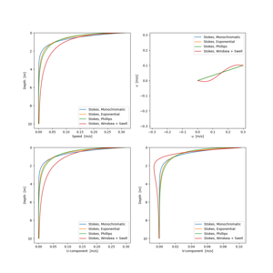
Stokes drift vertical profiles
Stokes drift vertical profiles


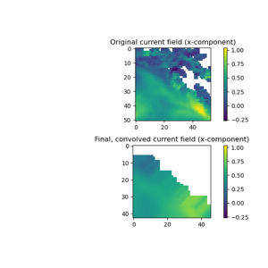
Convolve input
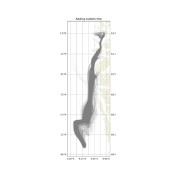
Trajan demo

Combining readers using operators
Combining readers using operators


Biodegradation of oil
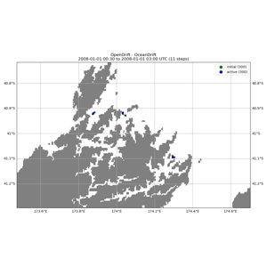
SCHISM native reader


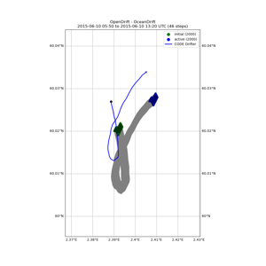
Current from drifter

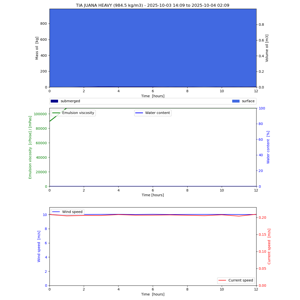
Entrainment rate for light and heavy oils
Entrainment rate for light and heavy oils
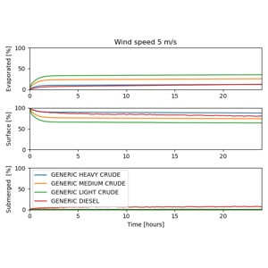
Comparing oil budgets

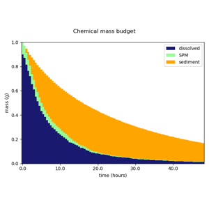
ChemicalDrift - Transport and fate of organic compounds
ChemicalDrift - Transport and fate of organic compounds